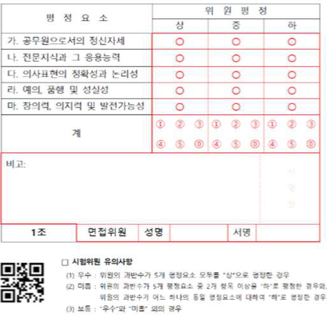
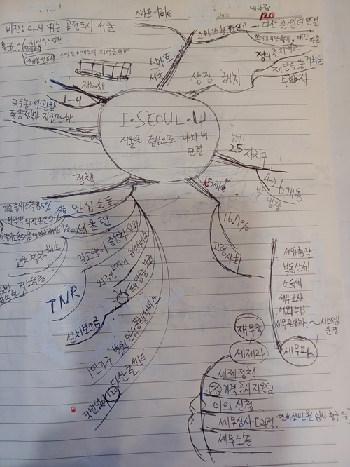

(평정요소를 국가직 볼때는 안 외웠었어요) (그런데 서울시에서는 평정요소를 물어본 적이 있다고 서울시 볼 때는 외웠어요) (지금 지나서 생각해 보니 평정요소에 해당하는 것을 최대한 끌어와서 대답해야 하는 것 같아요) ---- 질답형태로 적음 Q 학원 수강은 했나요? ❝ 저는 면접강의 수강 안 했어요. 대신 동생에게 면접 코치를 받았어요. 필기 커트라인에 걸리신 분이 면접학원에 등록하시고 또 하루에 8시간씩 면접연습하셨는데도 최종불합격한 영상을 봤어요. 저는 그 분만큼 면접준비 할 능력도 상황도 안 되기 때문에 학원을 안 다녔습니다 또 다른 이유도 있는데요, 제가 뭐 좀 하다가 망해서 돈이 없거든요. 통장 잔고가 0에 수렴하고 있어요(비유적 표현이 아님) ❞ Q 그럼 면접스터디는 하셨나요? ❝ 저는 면접스터디 안 했어요. 유튜브 등에 영상이 많이 있어서 그런 것들을 많이 봤습니다. 그리고 저는 거울 보는거 별로 좋아하지 않아서 거울보고 연습도 안 했어요. (어차피 코로나 때문에 마스크를....) 다만, 계속 중얼중얼 말하는 연습은 했어요. 예를 들어, 혼자 마트를 가거나 할 때 짬짬이 조리있게 말하는 연습을 하면 좋은 것 같아요. (두괄식으로 말하기와 '~습니다, ~입니다' 등으로 말을 마무리하는 연습을 했어요) 또 공무원의 6대의무, 공직가치 이런 기본적인 것들은 나올 때마다 정리해서 짬짬이 외웠습니다. (아래 적어둘게요) ❞ Q 좀 구체적으로 말해줄래요? ❝ 예를 들어 다이소에서 결제할 때 점원: 포인트 있으세요? 나 : 포인트 없습니다(not 없는데요) ---새우깡 사러 갈 때(주변에 사람 없을 때는 실전처럼 말하기)--- (결론)저는 지금 새우깡 사러 가게를 가고 있습니다. (이유)새우깡을 사려는 이유는 새우깡 먹으면서 어플의 버그를 수정하기 위해서입니다. 집 근처 가게보다 100원 싸게 살 수 있는 가게가 있어서 한 10분 정도 운동삼아 다른 동네로 걸어갈 생각입니다. ----- ---- 사발면 사러 갈 때(주변에 사람 없을 때는 실전처럼 말하기)--- (결론)오늘은 1100원짜리 사리곰탕면을 먹을 생각입니다. (이유)보통은 제일 싼 850원짜리 육계장을 먹지만, 오늘 볼펜 한 자루를 다 써서 자신에 대한 격려차원으로 그렇게 할 생각입니다. ----- 저는 위 처럼 일상적인 일들에 대해 (천천히 또박 또박) 말하는 연습을 했습니다. 면접일이 가까워 올수록 공직가치 등 면접에 관한 내용으로 바꿔서 했습니다 ❞ Q 면접 책은 무얼 보셨나요? ❝ 처음에는 유명한 강사 중에 하나 살려고 있는데. 따로 공부할 시간이 없어서 그냥 안 샀습니다. 대신 인터넷 검색을 하니 면접후기가 좀 있어 그것을 많이 참고했습니다. 그리고 면접강사들이 유튜브에 나와서 하는 해주는 팁 정도만 봤습니다. ❞ [공직가치 마인드맵]
[공직가치 마인드맵]

[서울시] 저는 교재같은 것이 없어서 따로 노트같은 걸 만들었는데요 이때 마인드 맵처럼 만들어서 수시로 생각났던 경험 등이나 키워드를 추가해 넣었습니다. 큰 틀은 비슷하지만 세부적인 것은 어차피 자신의 이야기로 채워야 하니 자기만의 노트가 중요한 것 같아요. 그리고 면접장에 들어가면 전자기기를 모두 제출해야 해요. (아이패드같은 전자기기를 통해 정리하는 것은 비추입니다) --- Q 면접복장은 어떻게? ❝ 국가직은 캐주얼 복장으로 오신분들도 있었는데 서울시는 모두 정장을 입고오신 것 같습니다. (국가직은 꼭 정장 안 입어도 된다고 별도 공지가 있었습니다.) ---- 저는 롯데마트 폐업할 때 산 2만원짜리 재킷과 7천원 주고 산 검은색 바지를 입고 갔습니다. 넥타이는 안 했습니다. (전날 다이소에서 2천원짜리 팔길래 살까 하다가 그냥 갔습니다) (저는 예전에 아는 누님이 '너는 어떻게 3만원 짜리를 입어도 만원짜리 입은 거 같니? 하셔서 그 이후로 옷에 별로 투자 안 합니다.) 복장은 신경 안쓰고 면접 내용에만 신경쓰시는 게 더 좋은 것 같습니다. (어떤 강사는 '발목이 보이면 안 좋으니 긴 양말 신어라'이러시는데 공무원 면접을 안 보신것 같습니다.) (각도 때문에 발목 안 보입니다) (의류회사 면접이 아니라서 그냥 깔끔하게 가면 되는 것 같습니다.) ❞ ====== 함께 알아두면 좋아요. ------ Q 면접관이 둘다 긍정적인 것에 대해 양자택일(갈등해결)의 질문을 하는 경우에는 어떻게 하나요? 이럴 때는 양자택일을 하는 것 보다 둘다 언급해 주는게 좋은 것 같아요. (양자택일인 경우 단정적 대답을 하지말고 유연하게 대답하셔야 해요) 예를 들면 A가 중요하다고 생각하지만 B도 잊지 않아야 합니다. (만약 A라고만 답하면 '그럼 B는?' 하면서 꼬리 질문이 들어올 수 있어요) (결국 갈등해결의 문제는 양쪽을 다 고려해서...) 비슷한 예로 Q 법 규정(A)과 도움이 필요한 민원인(B)이 상충하는 경우 어떻게 하시겠어요? 이럴 때 ❝법을 지키는 것이 공무원의 역할이므로 법 규정(A)에 따라 처리하겠습니다.❞ 보다는 ❝법(A)의 테두리 안에서도 민원인(B)에 대한 유연함을 잊지 않도록 하겠습니다.❞라고 대답하는 게 더 좋은 것 같아요. (민원인(국민)에 대한 봉사자로서의 역할도 잊지 않아야 하니깐요) ---- Q 위법을 강요하는 상사(A)와 법을 지키려는 나의 양심(B)이 상충하는 경우 어떻게 하시겠어요? [법 규정을 준수하는 것은 공무원의 기본입니다. 상사의 부당함을 알리고 제 양심을 지키겠습니다(X)] 위법성이 너무 커서 그 피해가 국민들에게 돌아갈 정도라면 절차에 따라 어쩌고저쩌고... 하지만 제가 우려하는 부분을 정리해서 상사분을 설득하는 노력도 잊지 않아야 할 것 같습니다. (예를 들면 법을 어기지 않으면서도 상사분이 원하시는 목적이 달성되는 안을 고민해보도록 해보겠습니다) --- 상사에 대한 복종의 의무가 있지만 이것은 그 지시가 적법할 때에만 적용되는 것으로 알고 있습니다. 그 위법한 정도가 크지 않다면 저는 상사의 지시를 따르겠습니다. 하지만 그 위법의 정도가 너무 커서 어쩌고저쩌고.... --- 면접관이 열린(약간 막연한) 질문을 할 때 저 같은 경우는 면접관이 "일과 공부를 같이 하면서 어떤 점이 어려우셨나요?" 라고 물어보셨는데 공부가 어려운 걸 물어보신 건지 아니면 일과 공부를 병행하는 어려움을 물어보신 건지 몰라서 당황했어요. 지나서 생각해보니 이럴때는 당황하지 말고 자신이 구체적인 상황을 설정하면서 공부 측면에서는.... 생활측면에서는....but ...하면서 극복하려고 노력하였습니다. 대답하면 좋을 것 같아요. (평정표에 보면 '발전가능성, 의지력'등이 있으므로 이런 질문을 하시는 것 같아요.) ----- 저는 따로 암기할 시간이 별로 없어서 아래 것만 틈틈이 외우고 면접보러 갔어요 (다 못 외워서 수험장 가면서도 외웠다는) =============================
공무원 6대의무
●(복종의 의무)
공무원은 직무를 수행할 때 소속 상관의 직무상 명령에 복종하여야 한다.
●(친절ㆍ공정의 의무)
공무원은 국민 전체의 봉사자로서 친절하고 공정하게 직무를 수행하여야 한다.
●(비밀 엄수의 의무)
공무원은 재직 중은 물론 퇴직 후에도 직무상 알게 된 비밀을 엄수(嚴守)하여야 한다.
●(청렴의 의무)
① 공무원은 직무와 관련하여 직접적이든 간접적이든 사례·증여 또는 향응을 주거나 받을 수 없다.
② 공무원은 직무상의 관계가 있든 없든 그 소속 상관에게 증여하거나 소속 공무원으로부터 증여를 받아서는 아니 된다.
●(품위 유지의 의무)
공무원은 직무의 내외를 불문하고 그 품위가 손상되는 행위를 하여서는 아니 된다.
주요 공직가치
(국가직 5분 발표 할 때 항상 나오니 외워야 해요)
----- 인재 개발원 원장이 기고한 글 중----
어쩌고저쩌고...
공직 가치는 국가관(애국심, 민주성, 다양성), 공직관(책임성, 공정성, 투명성), 그리고 윤리관(청렴성, 도덕성, 공익성)으로 구성돼 있다.
9개의 공직 가치 요소는 각각 독립적인 함의를 내포하고 있지만, 한 편으로는 상호 긴밀한 관련성 또한 갖고 있다.
공직 가치가 올바로 정립된 공직자에게서 비윤리적이거나 청렴을 위배하는 행동을 발견하기는 어렵다.
예를 들어, 나라의 발전과 국민의 행복에 관심을 두고서 헌신하는 자세(애국심)를 가진 공직자는 맡은 일에 소신 있게 일을 하며(책임성)
사익보다는 공익의 관점(공익성)에서 업무를 수행하게 한다.
어쩌고저쩌고...
-------
공직가치란 공무원의 의사결정과 행동의 기준이 됩니다.
즉 공무원이 어떻게 의사결정하고 일을 해야하는지 방향을 제시해 주는 중요한 가치입니다.
---
개발자:
저의 경우'사례를 통해서 유추할 수 있는 공직가치를 말하시오'라는 질문에 대해 '유추한 공직가치를 말씀드리기 전에
공직가치란 무엇인지에 대해 먼저 말씀드리겠습니다.'했더니 면접관님이 끄덕끄덕 해주시며 좋아해주셨다는..)
---
공직가치 팁
: 공직가치는 다 중요하지만 면접관이 그중 중요한 거 하나만 고르라고 할 때가 있어요.
이럴때는 둘중에 하나를 선택하지 말고 'A가 더 중요하다고 생각합니다. 하지만 B도 항상 잊지 말아야 합니다.'
(이런 식으로 A와 B를 언급해 주면 좋은 것 같아요)
(A를 선택하면 그럼 B는? 하면서 꼬리 질문 할 수도 있어요)
(양자택일(갈등해결)인 경우 단정적 대답을 하지말고 유연하게 대답하셔야 해요)
---
[국가관]
㉠ 애국심
: 나라의 발전과 국민의 행복에 관심을 두고서 헌신하는 자세
㉡ 민주성
: 국민이 자유롭게 참여하고 의견을 표현할 수 있는 공개행정
㉢ 다양성
: 서로 다름을 인정하고 다양한 생각과 문화를 존중
-----
[공직관]
㉠ 책임감
: 전문성을 가지고 업무를 소신있게 처리하는 것이라고 생각합니다.
: 전문성이 있어야 국민에 대한 실질적인 봉사로 이어질 수 있음.
*개인적인 차원에서 실천방안(또는 노력)
1.항상 관련 규정등을 항상 숙지
2.민원인이 하시는 말씀을 잘 듣고 그것을 업무지향적으로 정리하는 능력을 기르도록 노력
(잘 듣고 이해도가 높아져야 실질적인 문제해결이 가능)
㉡ 투명성
: 국민의 알권리 존중하여, 공공정보를 적극적으로 공개
(이를 통해 국민의 신뢰를 얻을 수 있음)
: 투명성’의 가치는 ‘적극적으로 정보를 개방하고 공유해 국민의 알 권리를 실현하려는 자세’를 의미한다.
: 국민의 입장에서 알기 쉽게 정보를 요약하고 어려운 개념은 쉽게 풀어 쓰는 등 국민의 이해와 편의를 고려함으로써 실현될 수 있음
㉢ 공정성
: 업무를 신중히 검토하고 절차에 따라 공정하게 처리
: 공정하기 위해서는 원칙을 일관되게 적용해야 하려고 노력해야
----
적극성
: 업무에 대한 열정과 관심을 바탕으로 주도적으로 문제를 해결하는 자세
-----
[윤리관]
㉠ 청렴성
: 공무원의 청렴이 국민신뢰의 기본
청렴(성품과 행실이 높고 맑으며, 탐욕이 없음)
현대에는 청렴의 기준이 과거보다 훨씬 엄격해져 공적 생활 외 사생활의 범위까지 확대되고 있다
공직자에게 업무능력과 더불어 높은 도덕성을 요구하고 있기 때문.
공직자 한 사람의 비 청렴은 조직의 신뢰 상실과 연결될 수 있다.
㉡ 도덕성
: 자신의 양심과 사회적 규범을 준수해 공직자의 본분을 충실히 하는 것
: 실현방안{준법정신을 생활화하고 공중도덕을 준수함}
㉢ 공익성
: 사익보다는 공익의 관점(공익성)에서 업무를 수행
: 국민에 대한 봉사자라는 의식
적극행정vs소극행정
[적극행정의 정의]
공무원이 불합리한 규제의 개선 등 공공의 이익을 위하여 창의성과 전문성을 바탕으로 적극적으로 업무를 처리하는 행위
적극행정 유형(예시)
- 행태적 측면
통상적으로 요구되는 정도의 노력이나 주의의무 이상을 기울여 맡은 바 임무를 최선을 다해 수행하는 행위 등
업무관행을 반복하지 않고 가능한 최선의 방법을 찾아 업무를 처리하는 행위 등
새로운 행정수요나 행정환경 변화에 선제적으로 대응하여 새로운 정책을 발굴·추진하는 행위 등
이해충돌이 있는 상황에서 적극적인 이해조정 등을 통해 업무를 처리하는 행위 등
- 규정의 해석·적용 측면
불합리한 규정과 절차, 관행을 스스로 개선하는 행위 등
신기술 발전 등 환경변화에 맞게 규정을 적극적으로 해석·적용하는 행위 등
규정과 절차가 마련되어 있지 않지만 가능한 해결방안을 모색하여 업무를 추진하는 행위 등
----------
[소극행정의 정의]
공무원의 부작위 또는 직무태만 등으로 국민의 권익을 침해하거나 국가 재정상 손실을 발생하게 하는 행위
소극행정 유형
- 적당편의
문제해결을 위해 노력하지 않고, 적당히 형식만 갖추어 부실하게 처리하는 행태
- 업무해태
합리적인 이유 없이 주어진 업무를 게을리 하거나 불이행하는 행태
- 탁상행정
법령이나 지침 등의 변화에도 불구하고 과거 규정에 따라 업무를 처리하거나, 기존의 불합리한 업무관행을 그대로 답습하는 행태
- 기타 관중심 행정
직무권한을 이용하여 부당하게 업무를 처리하거나, 국민 편익을 위해서가 아닌 자신의 조직이나 이익만을 중시하여 자의적으로 처리하는 행태
어쩌고저쩌고....
========